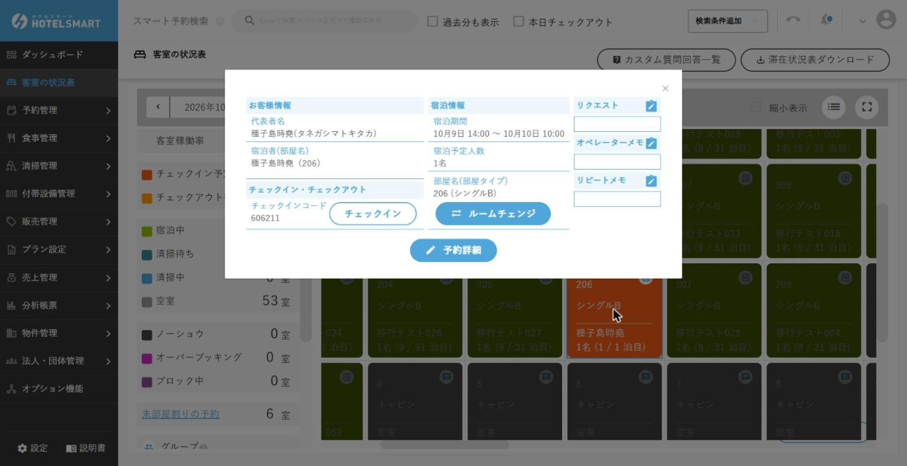
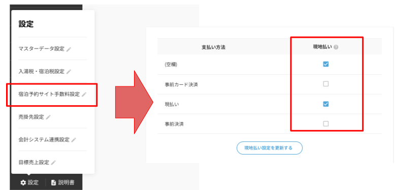
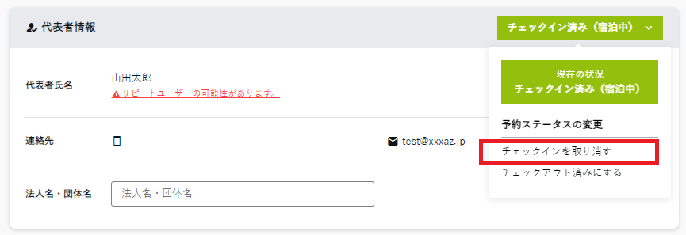

エラー・判断に迷ったら
困ったとき
やみくもに再入力せず、「今の状態を残す → 確認する → 必要なら責任者へ」の順で進めます。
最初にすること
- お客様の氏名・対象日・予約番号を控えます。
- 画面に出たメッセージを消す前に、文言をメモまたは画面撮影します。
- 何を押した直後か、直前の操作を控えます。
- 同じボタンを連打せず、下の症状別手順へ進みます。
してはいけないこと金額を無理に合わせる、同じ予約を作り直す、外部予約をPMSだけで書き換える、理由不明のまま自動連携を止める操作はしません。
予約が見つからない
- 客室の状況表で見つからないときは、部屋が決まっていない（未部屋割りの）予約かもしれません。未部屋割りの予約は状況表の部屋に出ないので、予約管理 → 予約情報で探します（公式マニュアルより）。
- 日付条件を前後1か月ほど広げます。予約情報の一覧は、初期状態では「チェックインが今日から1か月先まで」に絞られています（公式マニュアルより）。
- 名前を漢字、カナ、姓だけで検索します。
- 電話番号、予約番号、代表者名でも検索します。スマート予約検索は、同伴者の名前やOTAの予約番号でも探せます。状況表の［当日分の予約検索］は、団体名、代表者・宿泊者の氏名とフリガナ、OTA予約番号、部屋名で探せます（公式マニュアルより）。
- キャンセル済み・団体予約・別施設の予約も確認します。キャンセル済みの予約は、絞り込みで「キャンセルも表示する」を選ばないと出ません（予約を検索する）。
- OTAの管理画面または予約通知で、予約成立と施設を確認します。
- 外部にはあるのにPMSにない場合は、二重登録せず責任者へ連絡します。

当日のお客様が目の前にいる場合予約確認メールを見せていただき、宿泊日・人数・決済・予約番号を控えます。空室を確約する前に責任者判断を受けます。
チェックインできない
| 確認箇所 | 見る内容 | 対応 |
|---|---|---|
| 予約状態 | キャンセル、すでに滞在中、日付違い | 正しい予約か再確認 |
| 部屋 | 未割当、別予約と重複、ブロック中 | 勝手に解除せず責任者へ |
| 清掃 | 未清掃・清掃中 | 清掃担当へ実態を確認 |
| 支払い | 未精算、事前決済の未反映 | 二重請求せず予約経路を確認 |
| 必須情報 | 氏名・人数など未入力 | 事実を確認して入力 |

チェックイン用タブレットにエラーが出た
お客様がタブレットでチェックインできないときの表示と対応です（公式マニュアルより。表示の文言はあらきホテルでは未確認）。お客様の操作の流れはタブレットでのセルフチェックインを見てください。
| タブレットの表示 | 原因 | 対応 |
|---|---|---|
| チェックイン可能時間前です | 予約のチェックイン時刻（アーリーチェックインを設定していればその時刻）になっていない | 時刻まで待っていただくか、責任者の判断でフロントでチェックインする |
| 予約に部屋が割り当てられていません。施設管理者にご連絡下さい。 | 予約に部屋が決まっていない（未部屋割り） | 予約詳細で部屋を選んで保存し（部屋割り）、もう一度タブレットで進めていただく |
| チェックインコードが不正です | コードの打ち間違い、またはチェックイン日が今日ではない予約のコード | 予約を検索して、チェックインコードと宿泊日を確かめる。日付が違えば予約内容を確認する |
- パスポートや顔写真が撮れない：顔がはっきり1つ写るように撮り直していただきます。ほかの書類は顔の判定をしません。
- 入力を求められる項目は、タブレット表示設定の〖お客様情報入力〗で決まります。マイページで入力済みの項目は、タブレットで飛ばせます。設定を変えるのは管理者です（お客様情報入力）。
- 支払いを分けたいと言われた：タブレットでは分けられないので、フロントで精算します。
保存できない／エラーが出た
- 赤枠や「必須」の表示がある項目を確認します。
- 日付の前後、人数と部屋定員、電話番号の形式を確認します。
- 画面上部・下部にエラー文がないか確認します。
- 1回だけ保存し、反応を待ちます。
- 改善しない場合はエラー文、時刻、対象予約、操作手順を記録します。
- 別の画面で予約が作成・更新済みでないか確認してから連絡します。
ブラウザを閉じる前に入力内容とエラーを記録してください。再ログインで直る場合もありますが、先に閉じると原因と入力内容が分からなくなります。
予約の金額と画面の金額が違う
- 宿泊日、泊数、人数、部屋タイプを確認します。
- 追加料金、割引、税・サービス料を確認します。
- 予約経路と事前決済の有無を確認します。
- 変更履歴や予約通知の金額を確認します。
- 差額の理由を説明できない場合は、請求・返金をせず責任者へ連絡します。
管理者向け：事前決済なのに「未払い」と出るとき公式マニュアルでは、原因として、画面左下の「設定」→「宿泊予約サイト手数料設定」で、その支払い方法に［現地払い］のチェックが入っている可能性が挙げられています。フロントは二重に請求せず責任者へ回し、責任者・管理者がこの設定を確認します（あらきホテルでは未確認）。


OTAの予約内容とPMSが違う
宿泊日、人数、部屋、料金、キャンセル状態などが異なる場合の手順です。
- PMSの予約番号と、OTA・サイトコントローラー側の予約番号が同じか確認します。
- それぞれの最終更新日時を確認します。
- 差がある項目を具体的に控えます。
- PMS側だけを修正せず、責任者へ連絡します。
- 変更元と連携状況を確認してから、指示された画面で修正します。
自動更新を自己判断で停止しない停止後は外部で行われた変更が反映されません。また、再開するとPMSで直した内容が戻る可能性があります。
OTA側の変更が入ってこない主な理由（公式マニュアルより）
- 自動更新を止めている間に届いた変更は、あとで再開しても取り込まれません。
- チェックイン済みや日次締め済みの予約には、取り込まれない変更があります。
操作を間違えた／間違えたかもしれない
| 操作 | その場で行うこと | 行わないこと |
|---|---|---|
| 保存を連打した | 予約一覧で同じ予約が複数ないか確認 | さらに新規予約を作らない |
| 誤チェックイン／アウト | 時刻・予約・表示状態を記録して責任者へ | 別予約を作って帳尻を合わせない |
| 誤った金額を精算 | 金額・支払方法・伝票を保全して責任者へ | 反対の金額を勝手に追加しない |
| 部屋割りを間違えた | 旧部屋・新部屋・清掃状態・鍵を確認 | 宿泊中のお客様の部屋を無断変更しない |
| 外部予約を変更した | 変更項目と更新時刻を記録して連携確認 | 自動更新停止・再開を繰り返さない |
戻し方（公式マニュアルより）
- 日次締めの前なら：誤った精算は、予約詳細の《支払い情報》で行の「詳細」を開き「削除する」で消せます。精算済みの料金は、先に精算を消してから直します（料金情報の登録）。誤チェックイン／アウトは、予約詳細の右上のステータスから「チェックインを取り消す」「チェックアウトを取り消す」で戻せます。部屋別チェックインを許可している物件では、部屋ごとに取り消せます（部屋ごとのチェックイン）。
- 日次締めの後なら：締めた日の料金・精算は変更も削除もできません。締めていない日付か、予約外_料金・精算で調整します。この調整は責任者が行います（予約外_料金・精算）。

誰が戻してよいかは現場確認待ち操作の方法は上のとおりですが、誤チェックイン／アウト、精算取消、返金を誰が行ってよいか（権限）は、HOTEL SMARTおよびあらきホテル責任者への確認後に確定します。それまでは、上の表のとおり記録して責任者へ連絡します。
お客様にメールが届かない・送れない
自動メール（予約確認・チェックインコードなど）が届かないと言われたときに、順に確かめます（公式マニュアルより。あらきホテルでは未確認）。
- 予約詳細の宿泊者情報にメールアドレスが入っているか確認します。楽天トラベル・一休など、メールアドレスを渡さない予約サイトの予約には送れません（自動メール配信）。あらきホテルはSMSを使わないので、電話か予約サイトのメッセージで連絡します。
- アドレスの形が正しいか見ます。「..」のようにドットが続く、「@」の直前がドット、全角文字が混じっている、といったアドレスには送れません。
- 自動メールの送信日時がまだ来ていないかもしれません。送った日時は予約詳細の［付帯情報］で見られます。1週間以内なら、右上のアカウント名のメニューの「メール送信履歴」でも見られます。
- 送信済みなのに届かないときは、迷惑メールフォルダ、受信側でのブロック、受信側の遅れが考えられます。お客様に迷惑メールフォルダを見ていただきます。
- 手で送り直すときは、予約詳細の［付帯情報］の「送信」「再送」を使います。このボタンは自動送信の設定に関係なく送られるので、テスト予約では押さないでください。
- メールのリンクが開けない：受信側でリンクが無効になったり、URLが途中で改行されたりすることがあります。URL全体をコピーしてブラウザに貼るよう案内します。
- 送信元は返信できない no-reply@hotelsmart.jp です。お客様が返信すると、物件のメールアドレスに届きます。
- 送ったメールの本文はシステムでは見られません。控えが欲しいときは、各メールにBCCを設定してもらいます（管理者）。
- チェックインコードのメールは、マイページの入力が済んでいなくても、設定した日時に送られます。「再送信を行う」設定なら、入力が済んだときと設定日時の2回送られます。
- 設定と違う文面が届いた：テンプレートは（未選択）と日本語・英語・中国語・韓国語で別々です。どの言語で送るかはお客様がマイページやタブレットで選んだ言語で決まるので、全部を直します（管理者）。
- Gmailでは改行が反映されないことがあります。設定では直せません。自動メールにはファイルを添付できます。
- お客様へのメールを止めたいときは、自動メール配信設定で各メールの自動送信を「行わない」にします（管理者）。
お客様マイページで困ったとき
あらきホテルはお客様マイページを使います（2026/10/11 オーナー決定）。よくある問い合わせと対応です（公式マニュアルより。あらきホテルでは未確認）。
| 困っていること | 対応 |
|---|---|
| URLを開くと「Reservation not found」と出る | URLが途中で改行されているか、有効期限が過ぎています。URL全体をコピーしてブラウザに貼っていただきます |
| お客様が入力した内容を見たい | 予約詳細の〖宿泊者情報〗で氏名を押すか、予約管理 → 宿泊者情報 →「詳細を見る」で見られます（過去の予約も可。宿泊者情報の一覧） |
| パスポート画像が登録できない | 顔が1つ写っていないと登録できません。撮り直しても駄目なら、スタッフが予約詳細から開くお客様詳細で画像を上げます |
| 同行者を入力する画面が出ない | 入力項目を全部「代表者のみ」にしていると、同行者の画面は出ません（設定は管理者） |
| フォームメモに管理画面から書きたい | フォームメモ（マイページの自由記入欄）はお客様しか入力できません。スタッフのメモはオペレーターメモに書きます |
| 到着時刻など、項目にないことを聞きたい | お客様マイページ設定で「メモ」の項目を足すと、自由に書いてもらう欄を作れます（管理者） |
| 顔写真・身分証は必要か | 旅館業として必須ではありませんが、求めるかどうかは地域の保健所によって違います。責任者に確認します |
帳票やダッシュボードの数字が合わない
帳票ごとに数え方が違うため、数字がずれるのは珍しくありません。差を見つけたら、まず次の違いに当てはまらないか確認します（公式マニュアルより。あらきホテルでは未確認）。帳票の出し方は帳票・CSVを出すにあります。
| 帳票・画面 | 数える日 | 含む／含まない |
|---|---|---|
| ダッシュボードの今月の実績売上 | 利用日（無ければチェックアウト日） | 税別。予約外を含み、予約のステータスは問わない |
| 稼働出力 | 選んだ1日（締め時刻04:00で区切る） | 後日キャンセルされた予約も含む。ポイント利用・税・不計上・部分支払いは除く |
| 精算情報CSV | 支払日 | 予約と予約外の両方。返金は差し引き |
| 収支実績報告書 | 売上は利用日、精算は支払日か売掛先の起算日 | 税抜。税・不計上・ポイント・キャンセル予約は含まない。締め後に確定し、後から直しても変わらない |
| 帳票の月次集計 | － | 1日1回の更新。右上の集計日時を見る |
- 締め時刻が04:00なので、深夜0時〜4時前の精算は前の日に入ります（日次締め）。
- OTAの事前決済の内訳を支払日で確かめる帳票はありません。
- 誰がいつ料金・精算を変えたかは、料金・精算_更新情報CSVで調べます。
- 理由が分からない差は、金額を合わせる操作をせず、帳票名・期間・差額を控えて責任者へ連絡します。
責任者・サポートへ連絡するときのメモ
- 発生日時
- 担当者名
- 予約番号・宿泊者名・宿泊日（必要な範囲）
- 開いていた画面
- 直前に行った操作
- 表示されたエラー文
- すでに試したこと
- お客様が待っているか、急ぎか
施設固有情報を追記予定責任者の連絡順、HOTEL SMARTサポート窓口、受付時間、個人情報を含む画面の送信ルールは現場確認後に掲載します。